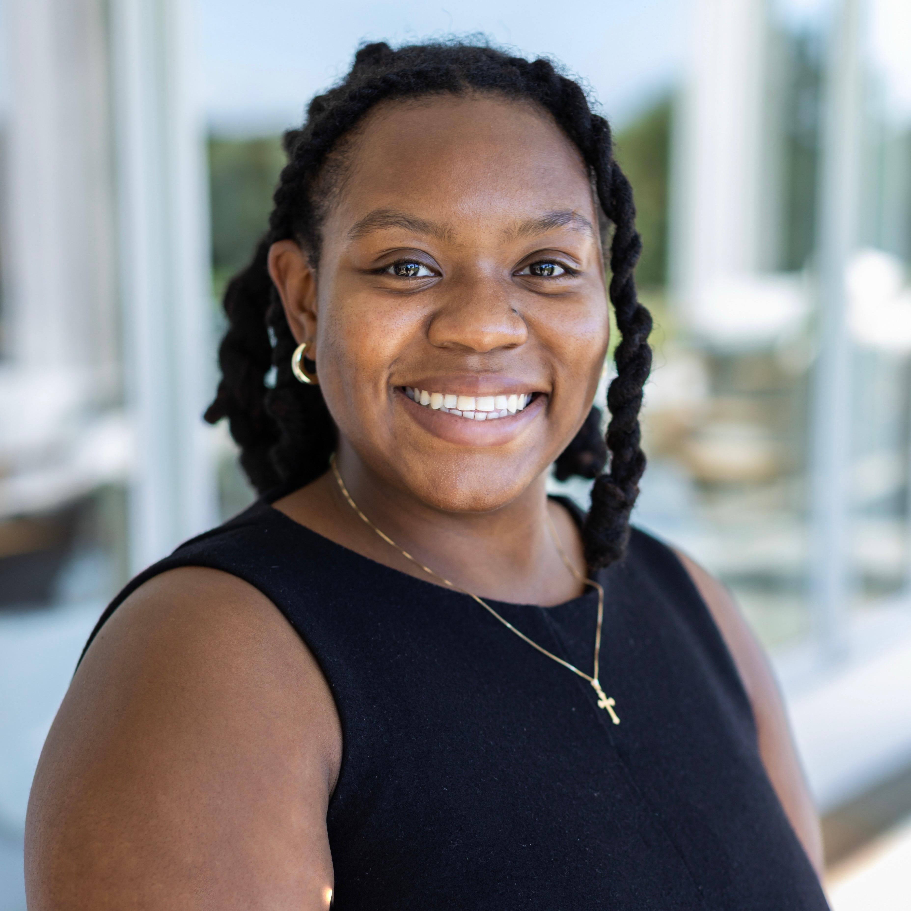

Christina Chance
PhD Candidate in Computer Science, UCLA
cchance [at] cs.ucla.edu
I am a fifth-year PhD candidate in Computer Science at UCLA, advised by Kai-Wei Chang in the UCLA NLP Lab. I am supported by the Eugene V. Cota-Robles Fellowship and the GEM Fellowship Program.
My research asks how language technologies can support cultural pluralism. I develop computational methods to model, evaluate, and audit these systems under social and linguistic variation, treating disagreement, dialect, and context as signal to model rather than noise to resolve. I study how models represent differences in human judgment, how dominant linguistic norms shape model behavior, and what evidence is needed to show that a system works reliably for the people it affects. My work combines natural language processing (NLP) with computational social science and digital ethnography to make these differences measurable and to carry them into how systems are designed.
I am also invested in teaching and in my department. As a UCLA teaching fellow, I am designing and teaching an original undergraduate course, AI, Power, and Society, and as the department's TA Coordinator I help train incoming teaching assistants. I chair the Computer Science Graduate Student Association, Graduate Women in Computer Science, and the Chancellor's Student Fee Advisory Committee.
Before UCLA, I received my B.S. in Mathematics and Computer Science from Emory University.
Beyond research, I love community service and watching anime.
Publications
* denotes equal contribution.
Content Moderation and Online Safety
- Policy Over Purpose: Auditing LLM Content Moderation of Reclaimed Slur UsageUnder review
- IYKYK (But AI Doesn't): Automated Content Moderation Does Not Capture Communities' Heterogeneous Attitudes Towards Reclaimed Language Under review arXiv PaperCode
- Re-imagining Virtual Communities: Ethical Guidelines for Studying Black Twitter AAAI/ACM Conference on AI, Ethics, and Society (AIES), 2025 PaperPoster
- ModelCitizens: Representing Community Voices in Online Safety Conference on Empirical Methods in Natural Language Processing (EMNLP), 2025 PaperPoster
- Leveraging Large Language Models and Topic Modeling for Toxicity Classification International Conference on Computing, Networking and Communications (ICNC), 2025 Paper
Bias and Fairness in AI
- Will the Prince Get True Love's Kiss? On the Model Sensitivity to Gender Perturbation over Fairytale Texts TrustNLP Workshop at NAACL, 2025 PaperPoster
- Survey of Bias in Text-to-Image Generation: Definition, Evaluation, and Mitigation arXiv Paper
Dialectal Bias for African American English
- Reinforcing Stereotypes of Anger: Emotion AI on African American Vernacular English Under review arXiv Paper
- An Analysis of Large Language Models for African American English Speaking Children's Oral Language Assessment Journal of Black Excellence in Engineering, Science, & Technology, Vol. 1 Paper
- CORAAL QA: A Dataset and Framework for Open Domain Spontaneous Speech Question Answering from Long Audio Files IEEE International Conference on Acoustics, Speech and Signal Processing (ICASSP), 2024 Paper
- Zoom Audio Transcription Accuracy for African American Vernacular English Honors Thesis, Emory University (High Honors) Paper
NLP for Social Sciences
- Tradeoffs in Automating the Annotation of In-Custody Death Records with Large Language ModelsUnder review
- Research Domain Criteria and Deaths by Suicide in the National Violent Death Reporting System JAMA Network Open Paper
- Measuring Narrative Complexity Among Suicide Deaths in the National Violent Death Reporting System (2003–2021 NVDRS) MDPI Information Paper
- Leveraging Language Models to Detect Greenwashing arXiv Paper
HCI and Design
- Surprising Personas: Persona Sets with Controllably Unexpected Features ACM CHI Conference on Human Factors in Computing Systems, Extended Abstracts (CHI EA), 2026 PaperCodePoster
Training Programs
Cohort member of the 2025 AIM-AHEAD & NCATS Health Data Science Training Program. My team's project, Artificial Intelligence Approaches to Clinical Prediction of 60-Day Mortality in Respiratory Infection (RI) with Smoking History: A Retrospective Cohort Study, received the Top Oral Presentation, Instructor's Choice Award.
Teaching
Teaching Fellowship
-
2026–27
AI, Power, and Society Original course
Designing and teaching an original undergraduate writing course, offered for writing credit, on how AI systems exercise and reshape social and political power. Students draw on social computing and digital ethnography and apply NLP approaches to study these tools across fields.
Teaching Assistantships
-
Fall 2025 & 2026
CS 495 Teaching Assistant Training Seminar TA Coordinator
Worked with about 75 students and future TAs per term. Graded assignments, handled course logistics, provided feedback to new TAs, and hosted office hours.
-
Summer 2026
CS 32 Introduction to Computer Science II
Worked with about 180 students. Led discussion sections, hosted office hours, and assisted in grading exams.
-
Winter & Spring 2025
CS 131 Programming Languages
Worked with 1 other TA, 4 LAs, and 120 to 180 students per term. Graded assignments and exams, led weekly discussion sections, and hosted office hours.
-
Fall 2024
CS 180 Introduction to Algorithms and Complexity
Worked with 2 other TAs and about 240 students. Graded assignments and exams, led weekly discussion sections, and hosted office hours.
-
Winter & Spring 2024
CS 162 & CS 263 Natural Language Processing
Worked with 1 to 3 other TAs and 110 to 130 students per term. Created and graded assignments, exams, and course projects, led discussion sections, and hosted office hours.
-
Fall 2023
CS 30 Principles and Practices of Computing
Worked with 1 other TA, 2 LAs, and about 120 students. Graded assignments, led weekly discussion sections, and hosted office hours.
-
Spring 2022
CS 377 Database Systems
Worked with 1 other TA and about 40 students. Graded assignments and hosted office hours.
Guest Lectures
-
2026
Anthro 259 Ethnography in Technology
Lectured on the failure modes of large language models that disproportionately affect marginalized communities and their relation to content moderation.
-
2026
Introduction to Computational Art
Designed and taught a short introductory course for middle school students.
Tutoring
-
Spring 2025
Ignite Fellow
Tutored 4 eighth grade students in math four times a week in preparation for their state exam.
Service and Leadership
- Chair, Chancellor's Student Fee Advisory Committee, UCLA, 2026–present (Member, 2024–26)
- Chair, Computer Science Graduate Student Association, UCLA, 2024–present
- Chair, Graduate Women in Computer Science, UCLA, 2022–present
- TA Coordinator, UCLA Computer Science Department, 2025–27